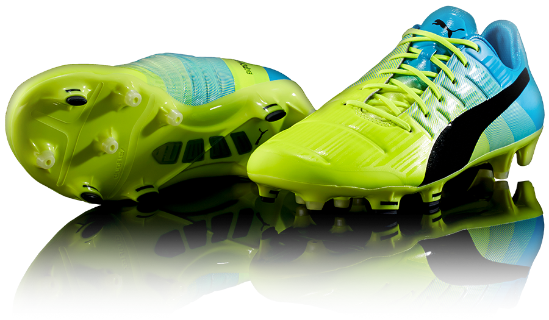

Los evoPower 1.3 convierten la mecánica de
la patada de pie descalzo en un botín con un
arranque flexible y longitudinal desde
la parte superior de la suela, entregando
mayor potencia y precisión.
la patada de pie descalzo en un botín con un
arranque flexible y longitudinal desde
la parte superior de la suela, entregando
mayor potencia y precisión.
TRACCIÓN
La mezcla de los tachones
redondeados y filosos
mejoran la tracción
y aceleración.
La mezcla de los tachones
redondeados y filosos
mejoran la tracción
y aceleración.

PRECISIÓN
El forro AccuFoam provee
una superficie más suave y
limpia para entregar una
mayor precisión.
El forro AccuFoam provee
una superficie más suave y
limpia para entregar una
mayor precisión.
FLEXIBILIDAD
La suela Pebax con un
marco estable reduce el
peso mientras provee una
flexibilidad gradual
La suela Pebax con un
marco estable reduce el
peso mientras provee una
flexibilidad gradual
POTENCIA
La capellada One-Way
se estira y adapta,
permitiendo doblar el pie,
imitando el movimiento
de la patada con el pie
descalzo.
La capellada One-Way
se estira y adapta,
permitiendo doblar el pie,
imitando el movimiento
de la patada con el pie
descalzo.
El empeine cuenta con la tecnología
AccuFoam que permite un golpeo limpio y
suave al balón, así como la tecnología GripTex
para un mejor control en cualquier tipo de
condiciones. La tecnología Adap-Lite, permite
emular el movimiento natural del pie. La
suela ultraligera y flexible brinda máxima
comodidad para el golpeo del balón.
AccuFoam que permite un golpeo limpio y
suave al balón, así como la tecnología GripTex
para un mejor control en cualquier tipo de
condiciones. La tecnología Adap-Lite, permite
emular el movimiento natural del pie. La
suela ultraligera y flexible brinda máxima
comodidad para el golpeo del balón.
EMBAJADORES
Yaya Touré
Darío Benedetto
Oribe Peralta
Olivier Giroud
Mario Balotelli
PUMA se las ha ingeniado para mejorar
este calzado año con año.
Lo que me gusta de esta versión es
a estabilidad que te otorga, lo que
ayuda a que de un mejor rendimiento.
El nuevo color, es genial. Sin duda
llamará la atención dentro de la cancha.
Cesc Fábregas
este calzado año con año.
Lo que me gusta de esta versión es
a estabilidad que te otorga, lo que
ayuda a que de un mejor rendimiento.
El nuevo color, es genial. Sin duda
llamará la atención dentro de la cancha.
Cesc Fábregas
